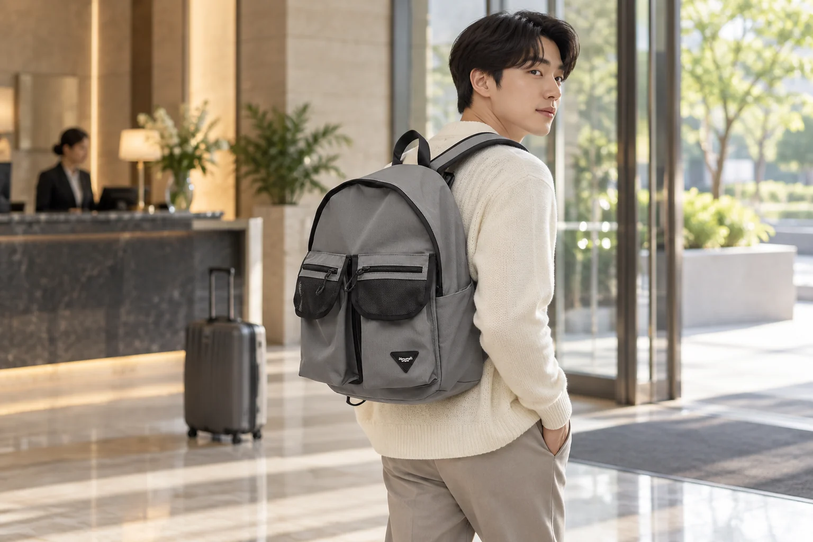

숙소 체크아웃 후 남은 하루: 백팩과 맡길 짐 나누기

아침에 숙소를 나왔지만 기차나 버스는 저녁인 날이 있습니다. 방에선 모든 짐이 한곳에 모여 있었어도 체크아웃 뒤에는 맡길 짐과 하루 종일 들고 다닐 짐을 갈라야 합니다. 이때 백팩을 무조건 가볍게 만드는 것보다 나중에 다시 찾을 물건과 당장 필요한 물건을 정확히 나누는 편이 중요합니다. 숙소나 보관 서비스의 운영 시간·규정을 먼저 확인하고, 맡긴 뒤 되돌릴 수 없는 동선을 생각해 보세요.
보관 가능 시간과 찾는 장소부터 확인합니다
체크아웃 뒤 짐을 맡길 수 있는지, 언제 어디서 찾아야 하는지 숙소 또는 보관 서비스에 확인하세요. 무료 여부, 크기 제한, 수령 시 필요한 확인 방법도 장소마다 다릅니다. 막연히 저녁까지 맡길 수 있다고 생각하고 일정을 잡으면 돌아오는 시간이 촉박할 수 있습니다. 이동할 역이나 터미널까지 걸리는 시간을 포함해 짐을 찾으러 갈 시각을 정합니다. 서비스를 이용하지 않는다면 처음부터 짐을 모두 직접 들고 이동할 수 있는 계획으로 바꾸세요.
하루 종일 들고 다닐 물건은 따로 뽑습니다
교통권, 신분 확인에 필요한 물건, 휴대전화와 충전 도구, 개인에게 필요한 약품 등 잃어버리거나 바로 써야 할 물건은 직접 관리할 가방에 둡니다. 맡겨도 되는 옷과 세면도구 등은 별도 짐으로 나누되 시설의 보관 금지 품목을 확인하세요. 여행 중 습기나 음식물이 생길 수 있다면 종이류와 전자기기를 떨어뜨립니다. 물건을 옮긴 뒤에는 빈 포켓을 한 번 더 확인해 숙소 서랍이나 캐리어에 작은 물건이 남지 않았는지 살펴봅니다.
백팩은 낮 일정에 맞게 다시 닫습니다
체크아웃 뒤 방문할 장소의 가방 반입 안내를 먼저 봅니다. 박물관이나 매장처럼 보관 방식이 다른 곳이 있다면 그곳에서 바로 꺼낼 물건을 최소한으로 정하세요. 맡길 짐에 넣어도 되는 물건을 백팩에 계속 넣으면 하루 종일 무게가 남고, 반대로 필요한 물건을 맡기면 되찾으러 돌아가야 합니다. 한 번 정리가 끝나면 지퍼를 닫고 끈을 조절해 걸을 때 크게 흔들리지 않는지 확인합니다. 사진 속 착용 모습은 실제 고객 사진이 아닌 AI 연출입니다.
수령할 때는 개수와 표식을 대조합니다
맡긴 짐을 다시 찾을 때 사용할 번호표나 확인 화면을 백팩 안의 정해진 자리에 둡니다. 개인 정보가 담긴 화면을 공공장소에 오래 열어두지 말고 직원 안내에 맞춰 제시하세요. 짐을 받으면 가방의 개수와 외형을 확인하고, 다른 사람의 물건과 바뀌지 않았는지 살펴봅니다. 바로 환승해야 한다면 통로를 막지 않는 곳에서 백팩과 맡긴 짐을 다시 결합해 손에 들 물건을 줄입니다.
귀가 후에는 여행용 배치를 풀어둡니다
집에 오면 낮 동안 백팩에 임시로 넣은 간식 포장, 영수증, 충전 도구를 꺼냅니다. 젖은 옷이나 우산이 들어갔다면 그대로 닫아 두지 말고 제품 관리 표시를 확인해 말리세요. 보관 서비스를 이용한 번호표와 여행 서류도 필요한 것만 정리해 보관합니다. 대표 사진은 실제 Himawari No.1230 그레이 원본을 참조해 숙소 로비를 연출한 AI 착용 이미지입니다. 캐리어와 로비는 연출이며 제품 구성품이나 실제 여행 후기와 무관합니다.
참고·안내
- Himawari No.1230 제품 정보
- 실제 Himawari No.1230 그레이 제품 사진을 참조한 AI 착용 연출 이미지입니다. 모델은 실제 고객이 아니며 숙소 로비와 캐리어는 연출입니다.
자주 묻는 질문
체크아웃 뒤 모든 짐을 숙소에 맡길 수 있나요?
숙소마다 보관 가능 여부와 시간, 크기·품목 규정이 다릅니다. 체크아웃 전에 이용 조건을 직접 확인하세요.
번호표나 수령 확인 화면은 어디에 두면 좋나요?
계속 들고 다닐 백팩의 정해진 자리에서 관리하고, 찾을 때 직원 안내에 따라 제시하세요.